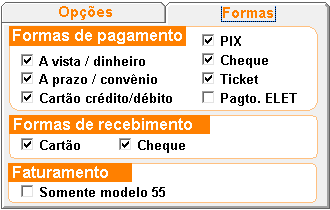
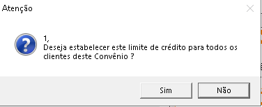
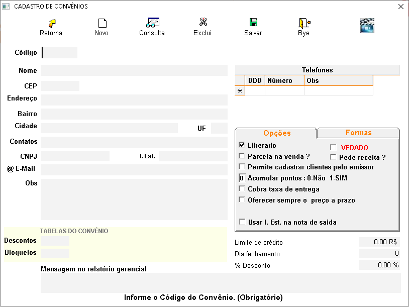

O que é um Convênio?
É um acordo firmado entre a loja e uma determinada empresa ou instituição, no intuito de conceder condições especiais nas vendas para os colaboradores cadastrados nesse convênio. Aperte no topico que deseja para conhecer a funcionalidade de cada opção.
+Qual o procedimento para cadastrar um Convênio?
-
No sistema:
- Clique no ícone
 ou pressione F3.
ou pressione F3. - Para que o sistema gere um código sequencial (automático), clique na lâmpada amarela
 .
. - Você pode, se desejar, informar/digitar o seu código de controle. Caso este código não esteja utilizado, o sistema permitirá o cadastro.
- Informe todos os campos pertinentes ao convênio e tecle F10 para salvar o cadastro.
OBS.: As informações sobre cada campo, estão no final da página.
+Como alterar os dados de um Convênio?
- Pressione F3 e digite o código do convênio já cadastrado. Caso não saiba o código, clique em consulta (F6) e consulte pelo nome.
- Encontrado o convênio, faça as alterações desejadas e clique em Salvar (F10).
+É possível excluir o convênio?
- Sim, mas deve-se atentar aos seguintes detalhes:
- Se existirem clientes cadastrados, ou movimentação (venda/nota fiscal de saída) vinculada a este convênio, a exclusão não será permitida.
+Descrição dos campos do Convênio:
- Nome: Informe a Razão Social do convênio.
- CEP: Digite o CEP, e o sistema pesquisará na base de dados da Sortee. Caso
retorne
que não encontrou os dados de endereço, digite esses dados da seguinte forma:
***RUA, NÚMERO (respeitando o espaço após a vírgula), se não tiver número coloque 0 ou então deixe sem nada, não colocar letras após a vírgula, pois em caso de emissão de Nota Fiscal Eletrônica dá erro. - Bairro: Informe o bairro.
- Cidade: Informe a cidade.
- UF: Informe o estado.
- Contato: Informe o nome do contato na empresa.
- CNPJ: Informe o CNPJ.
- Insc. Estadual: Informe a inscrição estadual.
- E-mail: Informe um e-mail para contato.
- OBS.: Esta observação será exibida no momento da venda, quando um cliente cadastrado neste convênio for selecionado.
- mensagem no relatório gerencial:
- Telefone: Informe o telefone para contato com o convênio. (Se tiver mais de um telefone, digite na próxima linha).
- Liberado: Marque a opção se o convênio está liberado para venda.
- Pede Receita: Marque a opção se o convênio exigir a informação da receita no ato da venda.
- Permite cadastrar clientes pelo emissor:é possivel informar o convenio no cadastro do cliente diretamente pelo emissor.
- Acumular pontos:caso deseje acumular pontos para esse convenio informe o numero 1 caso nao deseje a opçao informe o 0.
- Cobra taxa de entrega:Informe se será cobrado taxa de entrega para esse convênio.
- Oferecer sempre o preço a prazo: Marque a opção se para esse convenio for permitido a venda a prazo (parcelado).
- Usar I.Est. na nota de saida:quando for emitir alguma nota para este convênio será informado a Iscrição Estadual.
- Formas de pagamento: Marque quais são as formas de pagamento disponíveis para
esse
convênio:

- Limite de crédito: Informe se esse convênio terá algum limite para compras.
Este limite é controlado pela compra de todos os clientes/colaboradores deste convênio. - Digite o limite a ser cadastrado nos clientes.
- Clique com o botão direito do mouse sobre o campo limite de crédito. Será exibida a seguinte
mensagem:

- Dia de fechamento: Define o dia de vencimento das vendas a prazo:
Exemplo: Se eu informar dia 30, então tudo o que foi vendido no período do dia 01 até o dia 29 entrará com o vencimento no dia 30 do mês corrente. O que for vendido após o dia 29, entrará no próximo mês. - Desconto: Se terá algum desconto GERAL nas vendas.
(Lembrando que, se tiver cadastrado algum desconto para o cliente, ou então, alguma tabela de descontos, o sistema calculará desconto sobre desconto).

Observação importante: É possível informar o limite de crédito de todos os clientes (de uma só vez) deste convênio da seguinte forma:
+Tabelas do convênio
- Tabela de desconto:
Tabela criada com descontos especiais (por departamento, família, etc...).
No momento da venda, ao selecionar um cliente deste convênio, os produtos receberão o desconto cadastrado na tabela. - Tabela de bloqueio:
Tabela criada para bloquear a venda de determinados produtos (por departamento, família, etc...).
Exemplo: O convênio contrata apenas a venda de medicamentos e veda a venda de perfumaria. Sendo assim, eu crio uma tabela de bloqueio com perfumaria para este convênio.
Para cadastrar estas tabelas, acesse o menu cadastro / convênio / tabelas de desconto ou
bloqueio.
Informação opcional. O convênio não é obrigado a ter uma tabela de desconto ou bloqueio.